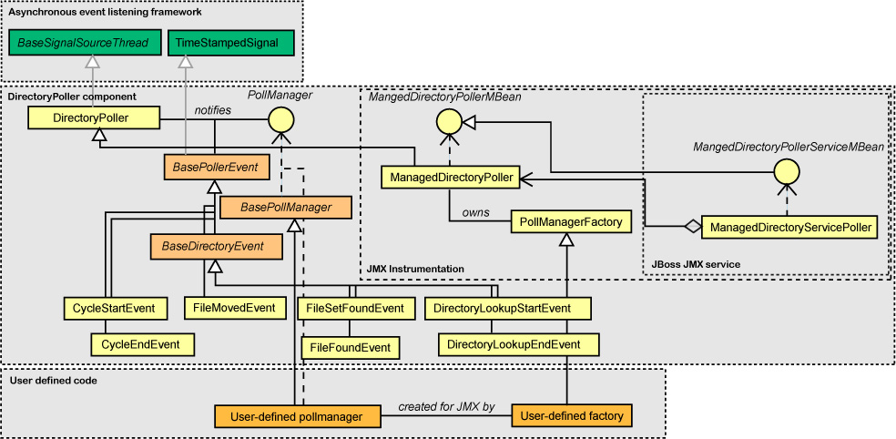

Sourceforge summary&download page
1. Purpose
This package realizes a typical behaviour found in many file-based conversations between independent systems: monitoring one or more local directories, observing incoming files and do something when they arrive.
Albeit more advanced techniques exist today to implement such conversations (from queueing systems to RPC in various flavors), file-based implementations are still in wide use since their initial simplicity of setup, monitoring and operations. Everybody has an FTP server, or can find one, or can open a 21 port in their firewall.
This component allows to approach efficiently most of the situations where such a solution needs to be deployed.
Its main service is periodic polling: once started, a DirectoryPoller object polls one or more directories every x milliseconds, looking for new files (optionally, only files accepted by a given java.io.FilenameFilter).
If any file are found, proper events are sent to any registered PollManager. The user must provide an implementation of PollManager to plug-in the desired behaviour.
2. Architecture
The architecture is quite simple: the DirectoryPoller class is a Thread class which exposes the main control interface. Poll interval, polling type, verbose level and other properties can be set on its instances.
An asynchronous event listening framework is used to dispatch signals. The directory poller allows registration of instances of a implementations of the PollManager interface, which will receive the various event objects and process the associated file as they like. Here's a class diagram for the main classes.
|  |
Client code will provide a PollManager (perhaps extending the BasePollManager base implemention), register it within a DirectoryPoller and invoke its start() method. The shutdown() method is used to stop the poller thread.
Time-based polling
In general, any file appearing in the controlled directory and accepted by a FilenameFilter (provided at construction) will be notified every time the poller looks in the directory. However, if time-based polling is enabled, the poller automatically further filters out also files on an "already polled" or "has changed" basis.
Specifically, two time-based polling modes are available:
| The net effect is that on every cycle only "new" files will be polled, where "new" is defined as "created/modified at any time after the time of the last polling cycle (or zero on the first cycle)". |
For example, the file foo1 whose LMF is 10:00:00 is found in the controlled directory /tosend at startup time 12:00:00. The base time for /tosend becomes 12:00:00, so on the successive polling cycle, at 12:05:00, foo1 will not be selected again. A file foo2 appeared in the /tosend with a LMF after 12:00:00, however, will be selected.
| The net effect is that on every cycle only "new" files will be polled, where "new" is defined as "created/modified at any time after the modification time of any of the files already polled". |
For example, the file foo1 whose LMF is 10:00:00 is found in the controlled directory /tosend at startup time 12:00:00. The base time for /tosend becomes 10:00:00, so on the successive polling cycle, at 12:05:00, foo1 will not be selected again. A file foo2 appeared in the /tosend with a LMF after 10:00:00, however, will be selected.
Automove mode
In general, PollManagers receive events asynchronously with respect to the poller thread. This allows for bad, faulty or defective PollManagers to block or fail without blocking the the poller or interfering with other PollManagers' work, and for PollManagers performing heavy processing to continue to receive events while elaboration is carried on.
However, it also means that, if file processing is performed without moving the file out of the polled directory, the polling interval should be big enough to allow such processing to complete, or the same file may be notified more than once.
Alongside the time-based modes, the automove mode solves the issue by ensuring that the poller itself will move all the files found in a certain controlled directory to an associated directory before notifying the listeners and/or the pollmanager. Since the move operation is atomic with respect to the PollManager, processing can take as much as time as wanted, but each file will be notified only once.
In automove mode, the poller associates a directory d1 (called "automove directory") to each controlled directory d (by default, a received subdirectory of d); whenever a file is found in d, it's moved to d1 and only then the related events generated and notified.
These events will contain the path of the moved file rather than its original path.
If an exception occurs during moving (for example, the automove directory cannot be created, or a file with the same name exists already exists in the automove directory, etc) an exception event is sent to the PollManager by invoking its exceptionMovingFile() method and/or exceptionDeletingTargetFile() method.
For example, if the file foo1 is found in the controlled directory /tosend, the poller will move it into /tosend/received (or whatever automove directory is associated to /tosend), and the FileSetFoundEvent and/or FileFoundEvents will indicate as file path /tosend/received/foo1 rather than /tosend/foo1.
Automove mode and locked files
Occasionally, files may take long time to be placed into a controlled directory, and if the poller may attempt to move them when they are not locked. If the bypassLockedFile() property is set to true (defaults to false), the poller ignores files that appear to be locked and does not move or notify them (they will be notified in a following polling cycle, as soon as they are not locked anymore).
If the property is not set, an exception moving file will be notified as normal, since locked files cannot be moved.
Controlling the order of file events
By default, no order is imposed on the file events produced by the poller: they will be fired in an arbitrary order, depending on the operating system. However, such order can be controlled by providing a java.util.Comparator object which is used to sort the list of detected files prior to firing events to the PollManagers. Any comparator that handles two java.io.File objects can be used; two pre-packaged comparators DirectoryPoller.ModificationTimeComparator and DirectoryPoller.FileSizeComparator are provided as static inner classes of the DirectoryPoller class.
If you use the JMX instrumentation, please read also the relative Specifying files sorting comparator via JMX section.
Stopping and restarting the poller object
If you are controlling the poller via JMX, please refer to the next chapter. If you are using the DirectoryPoller class programmatically, you may want to stop and restart the polling. DirectoryPoller is a Thread object implementing the Terminable interface (see http://sadun-util.sourceforge.net/) and can be shutdown by using its shutdown() method.
However, once terminated, the thread will be in Dead state. To restart it, simply create a new Thread using the Poller as a Runnable object:
DirectoryPoller poller = ... poller.start(); // Start ... poller.shutdown(); // Stop while(poller.isAlive()); // A bit of busy waiting but should be very short - it's here just as an example ... new Thread(poller).start(); // Restart.. .. poller.shutdown(); // Stop again
Exception notification & debugging
In case exceptions are raised when moving or deleting a file by the poller, an exception... method in the PollManager is invoked. However, these methods do not provide the root exception object. The debugException property (false by default), if turned on, will force the poller to print out on standard output the complete stack trace of the original exception, thus allowing better understanding of the underlying cause.
3. JMX instrumentation
A JMX instrumentation of the poller is available, to allow control of its behaviour from a JMX console. This means that a poller object can be created, run and controlled within a JMX agent without writing Java code (*).
Several JMX agents and consoles are already available, from the JBoss application server - which is built as a set of managed objects and contains both an agent and a console - to Apache's JMX agent MX4J to consoles as MC4J.
The instrumented directory poller is a Standard MBean, in the class ManagedDirectoryPoller (and the associated MBean interface is ManagedDirectoryPollerMBean).
It exposes most properties and methods which allow to configure and operate it via a JMX agent. The specific JMX agent prescribes how to physically describe the configuration. Below you'll find an example for JBoss 3.x.
Configuring the MBean (overview)
Exactly as when operating programmatically, there are two phases in the lifecycle of the MBean: its creation, and its execution.
The creation is generally responsability of the JMX agent, which takes configured properties and creates an MBean instance at startup (or whenever necessary). Most properties need just to be declared. The verbosity level, for example, or the polling interval have corresponding MBean attributes which can be just declared in whichever way the JMX agent dictates.
However, some of the DirectoryPoller's construction parameters are Java objects (for example, the array of File objects denoting the controlled directories), and so are some post-construction configuration parameters (for example, the PollManager(s) to use).
While it would be possible to expose them as MBeans as well, that would require additional work on the client side both for configuration or to create PollManager implementations which are failsafe under conditions not necessarily known or understood.
Therefore, the ManagedDirectoryPoller uses another approach:
For example, the set of controlled directories (which in DirectoryPoller is specified as a set of File objects) is set as the value of the MBean attribute ControlledDirectories, which contains a comma separated list of the directory names. Note that spaces are not allowed after the commas. For example, /usr/local/incoming,/incoming is a legal value for this property.
Every time this property is set (comprised initialization time), the corresponding File objects are created and set.
For example, a configuration like
<mbean code="org.sadun.util.polling.ManagedDirectoryPoller"> <attribute name="ControlledDirectories">/usr/local/incoming,/incoming</attribute> </mbean>will set /usr/local/incoming and /incoming as controlled directories when the MBean instance is created.
Also, list...() methods are provided as MBeans operations to pretty-print such information when the MBean instance is already created.
For example, PollManager(s) are added to the DirectoryPoller invoking specific addPollManager() methods - which, in a managed context, would be infeasible and require the JMX administrator to explicitly invoke the method via the console.
To avoid this problem, the PollManagerFactoryClass property is exposed by the MBean, containing the name of a factory class for an array of PollManagers (or null) which implements the PollManagerFactory interface.
Every time this property is set (comprised initialization time), an instance of the factory class is created (via its public default constructor), and its createPollManagers(String canonicalObjectName) method invoked; the resulting PollManager objects are added to the DirectoryPoller.
The factory receives the canonical MBean name of the poller to which the managers will be added, so that the same factory can be used for multiple pollers and can discriminate among them.
For example, when configured as in
<mbean code="org.sadun.util.polling.ManagedDirectoryPoller"> <attribute name="PollManagerFactoryClass"> org.sadun.util.polling.test.TestPollManagerFactory </attribute> </mbean>the MBean will try to instantiate org.sadun.util.polling.test.TestPollManagerFactory, invoke its createPollManagers() and add the resulting objects.
All such properties can be set only when the poller is not running.
File name filters
A similar mechanism exist for instantiating file name filters. A factory interface FilenameFilterFactory can be implemented by the user to create a specific filename filter (depending on the MBean name), and the name of the implementation class can be specified in the MBean. Doing so (i.e. invoking the setFilenameFilterFactoryClass on the MBean will trigger the creation of the FilenameFilter (which overrides any existing filter). If the parameter is an empty string, the filter is reset.
Specifying events ordering and/or files sorting comparator via JMX
1. Using sort expressions
The simplest way to impose an ordering to the file events fired by the poller is to set the JMX property EventsOrdering with an expression denoting which file properties to use and which direction (ascending or descending) to order. The expression is a semicolon-separated list of file property names optionally followed by the keywords ascending or descending. For every file, every expression is evaluated. If two files are equal for one expression, the next one will be evaulated, and so on. For example:
will order the events using the lastModified property of files and, if the modified property is the same, will use the file's length.
The available properties are as follows:
lastModified ascending; length descending
| Property name | Description |
| lastModified | Last modified time |
| length | file length |
| name | file name |
| canRead | readability (files that can be read are greater than files that cannot) |
| canWrite | writeability (files that can be written are greater than files that cannot) |
| hidden | visibilty(hidden files are greater than visible files) |
To indicate no ordering, specify "none".
| Note that using an ordering expression will actually create an instance of an internal Comparator, so the comparator class, if any, will be overridden automatically; similarly, specifying a different Comparator class will overidde the event ordering. |
2. Using Comparators
Another way to specify the order of FileFound events is - as it is done for the non-JMX DirectoryPoller object - specify a Comparator object which is used to sort the files read in a giving controlled directory. Since they are usually relatively simple objects, file sorting comparators (which impose an ordering on the events fired to pollmanagers) can be set by directly specifying the class of the desired Comparator object as value of the FilesSortComparator MBean property (as opposite to spefcifying a factory class).
| The chosen Comparator class must have a public default constructor. |
For example, the two comparators org.sadun.util.polling.FIFOFileComparator and org.sadun.util.polling.LIFOFileComparator can be used directly to specifiy a First-In/First-Out ordering (i.e. the files which have the oldest modification time are notified first to the PollManagers) or Last-In/First-Out ordering (i.e. the newest files are notified first) and are built as simple extensions of the org.sadun.util.polling.DirectoryPoller.ModificationTimeComparator class (which cannot be used directly since requires a construction parameter).
So, specifying
<mbean code="org.sadun.util.polling.ManagedDirectoryPoller"> <attribute name="FilesSortComparator"> org.sadun.util.polling.FIFOFileComparator </attribute> </mbean>has the net effect of ensuring that file events are fired in a FIFO order with respect to their modification times.
If, for example, events must be ordered depending on the file size, the following extension of
org.sadun.util.polling.DirectoryPoller.FileSizeComparator simply introduces a default constructor and can be therefore used as value for the JMX attribute:
public class BiggerInFirstOutComparator extends org.sadun.util.polling.DirectoryPoller.FileSizeComparator {
public BiggerInFirstOutComparator() {
super(false);
}
}
JMX Notifications
From version 1.5, the poller emits also JMX notifications corresponding to the poller events discussed above.
JMX notifications must have a sequence number. The property JMXSequenceNumberGeneratorClass defines the name of a class which implements the SequenceNumberGenerator interface, and is used to generate such ids. By default, it is set to org.sadun.util.polling.CoreSequenceNumberGenerator, which simply stores the sequence in memory. If you use a distributed MBeanServer , however, you may need to create your own generator class.
The methods addNotificationListener(mBeanServer, objectName) and removeNotificationListener(mBeanServer, objectName) add and remove notification listeners to/from the poller. The listener is identified by its ObjectName (for example: user:service=NotificationMonitor) and the name of the server it resides on.<
The overloads addNotificationListener(objectName) and removeNotificationListener(objectName) (which don't require the MBean server name) are shortcuts which default to the current MBeanServer.
Running the poller from a JMX console
Once the poller is created/configured, it's not automatically started by the JMX agent. The JMX administrator must enter the console and explicitly invoked the startUp() operation. The poller thread will start operating - and, if verbose mode is active, its output will show in the hosting JMX agent display.
JBoss JMX agent
Certain agents, however, may provide some mechanism for starting automatically an MBean after the agent has initialized. For example, JBoss checks whether an MBean expose the so called "service interface" - two methods called start() and stop() - and invokes the start() method of any MBean that provides them. A specific JBoss subclass of ManagedDirectoryPoller, jboss.ManagedDirectoryPollerService (and its accompanying MBean interface, jboss.ManagedDirectoryPollerServiceMBean) are provided for JBoss agent. Using these MBeans instead of the general ManagedDirectoryPoller will make the directory poller start automatically at JBoss startup, given that enough configuration is provided.
(*) Apart from user-defined functionality, of course: for example, an user-specific PollManager still needs to be written to execute an user-specific action on polling. But instantiation, configuration and running of the poller object do not need coding. This, together with pre-packaged PollManagers like the ScriptedPollManager allow complete scriptability, if so desired.
4. Examples
A programmatic example
The following Java code instatiates a poller on a /mydir directory and registers an imaginary MyPollManager, then starts the polling.
DirectoryPoller poller = new DirectoryPoller(new File("/mydir"));
poller.addPollManager(new MyPollManager());
poller.start();
...
poller.shutdown();
Example MBean configuration for JBoss 3.x
The following example configures a ManagedDirectoryPoller as an MBean whose ObjectName is DirectoryPoller in the user domain (specified in the user-service.xml file in the deploy directory of a JBoss server). pollmgt.jar must be available in the server's classpath - it's sufficient to put it in the lib directory of the JBoss server.
The MBean is set to be verbose, with a polling interval of one second, controlling a /mydir directory. An user-defined PollManagerFactory (in this case, a TestPollManagerFactory, which produces one single instance of TestPollManager) is setup as a factory for defining which PollManagers to use.
<mbean
code="org.sadun.util.polling.ManagedDirectoryPoller"
name="user:service=DirectoryPoller">
<attribute name="Verbose">true</attribute>
<attribute name="PollInterval">1000</attribute>
<attribute name="StartBySleeping">true</attribute>
<attribute name="ControlledDirectories"</mydir>
<attribute name="PollManagerFactoryClass">org.sadun.util.polling.test.TestPollManagerFactory</attribute>
</mbean>
JBoss 4
To install the MBean under JBoss 4, simply:
/default/deploy)
pollmgt.jar to that directory
<server> tag) in jboss-service.xml
(of course, you may create the SAR by jarring everything together if you wish).
Changes from version 1.5
Changes from version 1.4
Changes from version 1.3.2
Changes from version 1.3.1
Changes from version 1.2.2c
Changes from version 1.2
Changes from version 1.1
Changes from version 1.0